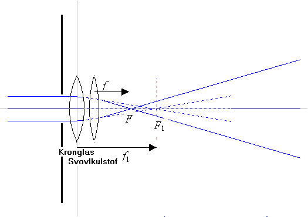
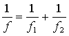
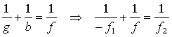
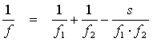
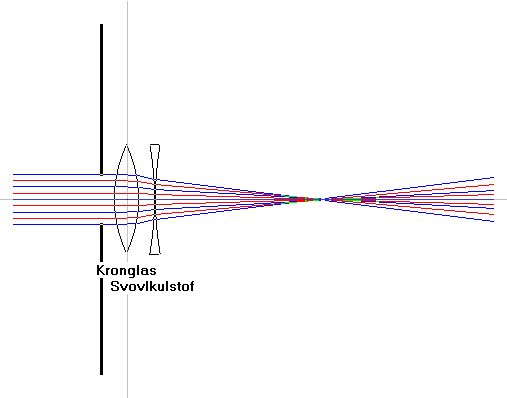

To samlelinser anbragt tæt sammen med fælles akse virker som én linse og brændvidden, f er bestemt ved:

Formlen kan vises ved at betragte ovenstående figur. Strålerne brydes i linse 1 (kronglas) og samles i brændpunktet F1 i et indbildt billede. Dette billede afbildes af linse 2 (svovlkulstof) i brændpunktet F. Ved anvendelse af linseformlen på linse 2 fås således:

og heraf fås:
Hvis de to tynde linser ikke er anbragt tæt sammen men i afstanden, s, kan man vise, at brændvidden er bestemt ved:

Husk, at brændvidden for en samlelinsen regnes positiv og for en spredelinse negativ!
Styrken af den sammensatte linse er givet ved: D = D1 + D2.
En samlelinse har styrken 10 dioptrier og en spredelinse styrken -5 dioptrier.
Beregn styrke og brændvidde af den sammensatte linse.
To samlelinse A og B med brændvidderne 20 cm og 2 cm er anbragt 21,5 cm fra hinanden.
Lyset fra en fjern stjerne passerer gennem A og B i nævnte rækkefølge.
Den akromatisk linse

På dette billede er valgt en samlelinse og en spredelinse, og der er tegnet stråler for blå (486,1 nm) og rød (768,2 nm). Ved passende valg af brændvidder og stof ser man, at linsesystemet bliver akromatisk.
Prøv selv med forskellige kombinationer. Prøv det samme i simulationen af linsen ved valg af dublet.